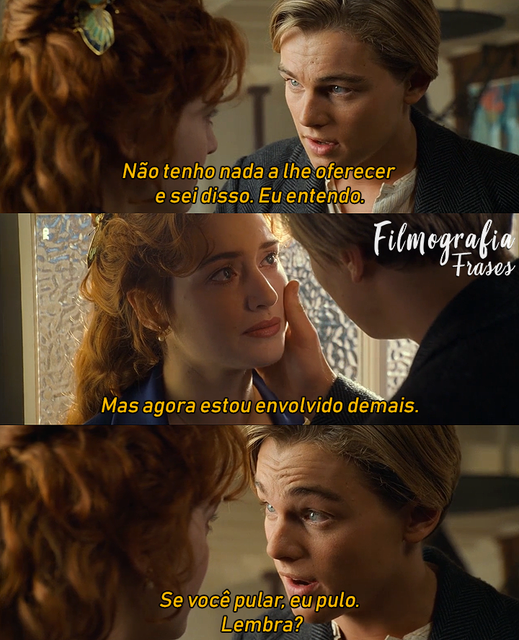

Entendo porque você está desse jeito, com raiva, ódio e sabe lá mais o que, porque simplesmente quem você ama errou com o amor que sente por você. realmente entendo bem isso, porque você está igual eu quando fiquei enfurecido no período que acertamos que você não falaria com aquele cara do seu trabalho, mas por fim você falou e mentiu pra mim.
Me lembro de ter ficado enfurecido porque jamais esperava aquilo de quem tanto amo. E me senti traído, com meu coração amargurado, partido e definitivamente não queria mais você. Mas pensei o seguinte… não somos perfeitos, eu não sou, você não é e por vezes erramos Joana, assim como todos, e isso é um relacionamento, uma escolha onde cada um escolhe permanecer porque escolheu amar. Então escolhi te amar e te dei mais uma chance, a chance que você me pediu e não foi a primeira que você me pediu pos ja havia errado várias outras vezes.
Sei que ignorei por raiva, sei que falhei como namorado, como alguém que deveria lhe proteger, lhe guardar… sei que não sou perfeito e tenho meus erros, mas saiba que também não entendo muitas coisas do coração e por isso já falei para saber conversar comigo para eu entender muitas falhas também, para eu saber como lidar com você Joana, porque foi você quem escolhi amar. E vim por aqui para dizer que errei, que logicamente me arrependo e que estou aqui para melhorar a cada dia porque amo você, e não venha me dizer que estava se deixando de mim por causa da minha próxima namorada… entenda Joana, a próxima, a atual e a de sempre é você!
É você quem eu escolhi, é você quem amei, é você que desejo, é você que quero… Joana eu não me vejo mais sem você, não adianta eu realmente te amo, mas não é porque amo eu vou ser perfeito, nem sempre vou agir da melhor forma, se comportando como certo, Joana, eu sou humano como você, e estou aqui lhe pedindo uma chance para continuarmos o que já firmei em meu coração, que é você na minha vida!
Não seja tão dura comigo e nem consigo mesma, não acertarei sempre, mas a única certeza que tenho é que te amo!
